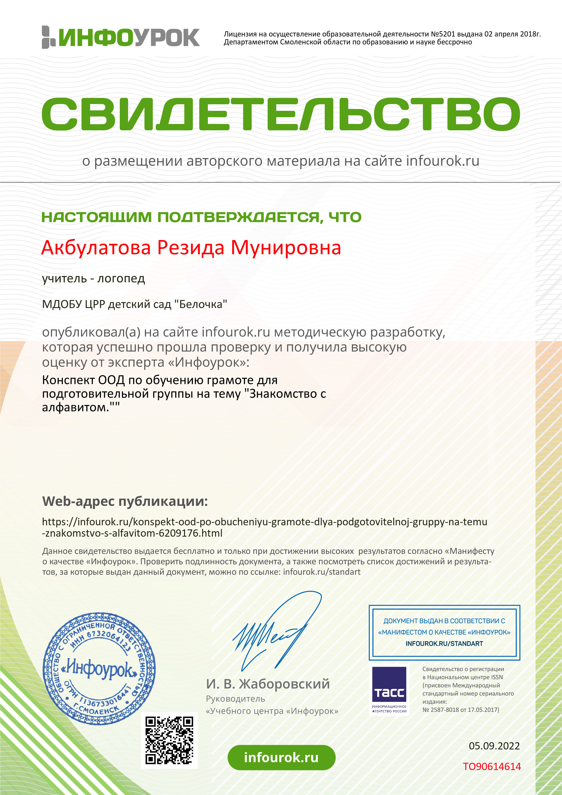
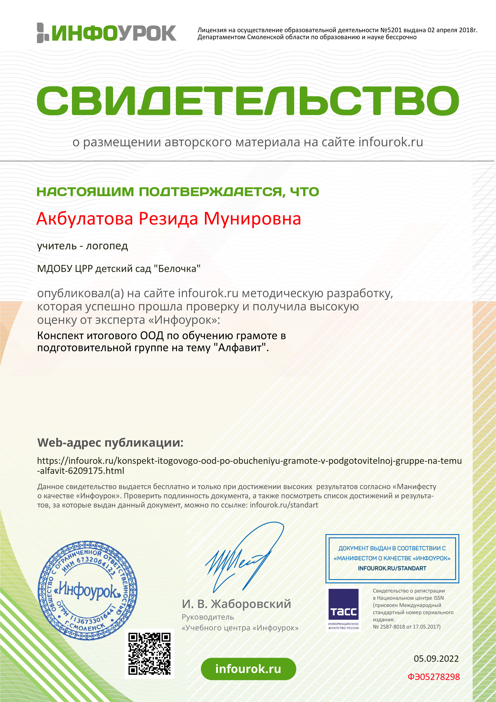
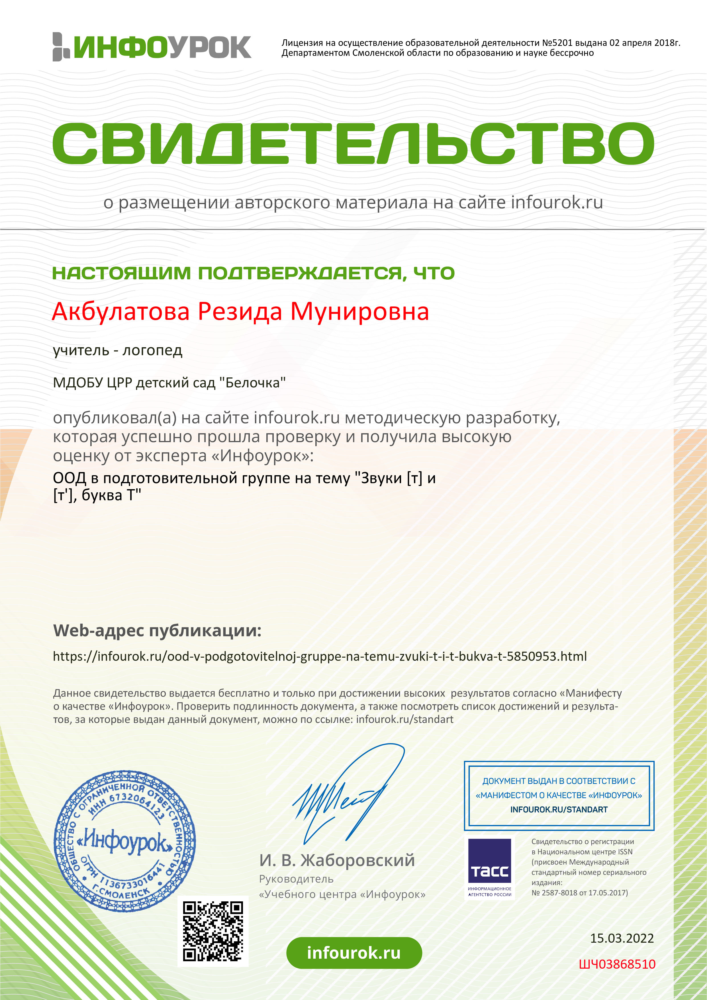
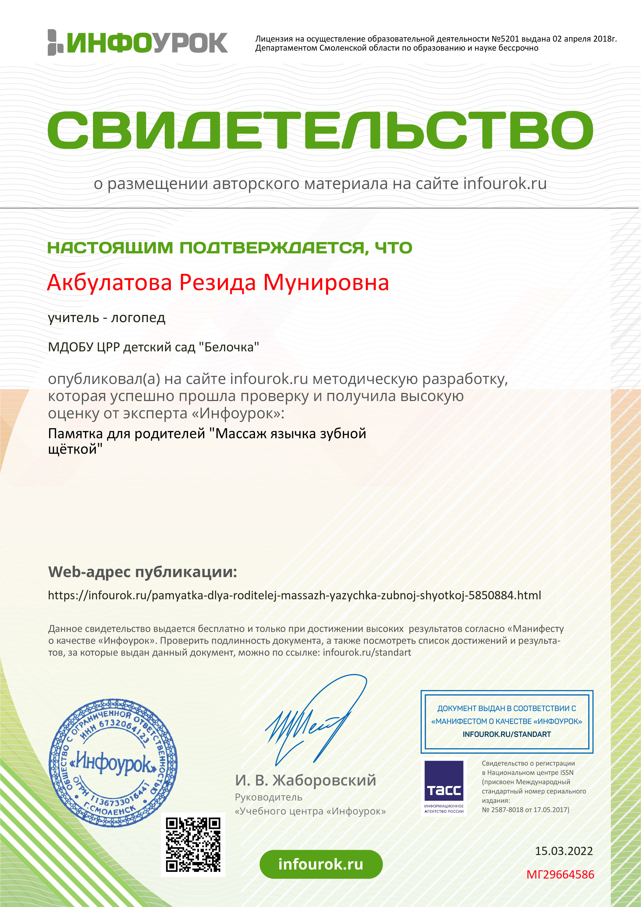
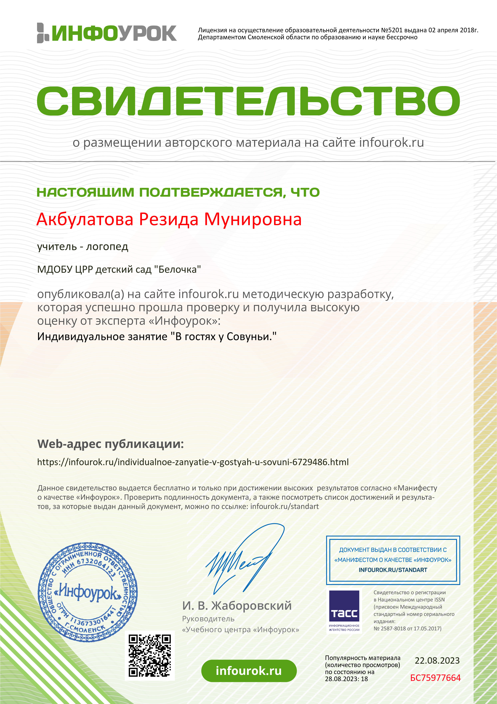

Мои публикации
"Роль песочной терапии в развитии речи детей дошкольного возраста" Материалы X Всероссийской научно-практической конференции.
Конспект индивидуального занятия на автоматизацию звука [л]
Открытое ООД на развитие лексико - грамматических категорий в старшей группе на тему "Зима"
Конспект ООД по развитию речи для старшей группы на тему "Фрукты"
Конспект ООД по обучению грамоте для подготовительной группы на тему "Знакомство с алфавитом."
Конспект итогового ООД по обучению грамоте в подготовительной группе на тему "Алфавит".
ООД в подготовительной группе на тему "Звуки [т] и [т'], буква Т"
Памятка для родителей "Массаж язычка зубной щёткой"
Памятка для родителей "Что должен знать ребенок идущий в первый класс?"
